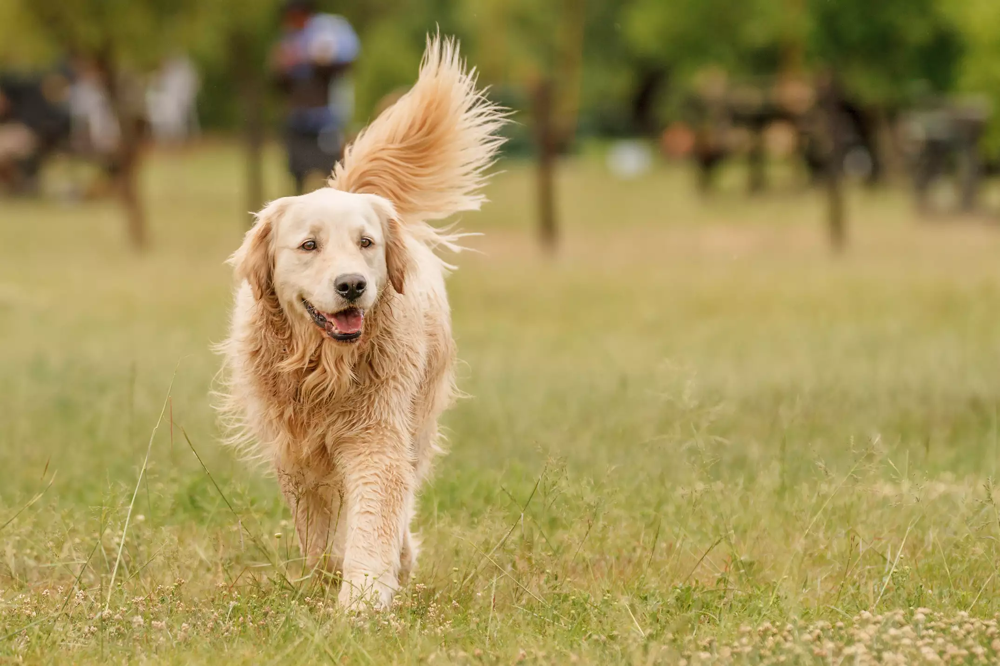
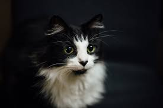
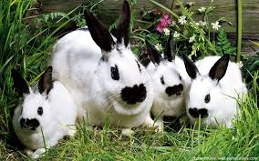

<div class="homepage-slider">
    <div id="sequence">
        <ul class="sequence-canvas">
            <!-- Slide 1 -->
            <li class="bg4">
                <!-- Slide Title -->
                <h2 class="title">Dogs</h2>
                <!-- Slide Text -->

                <h3 class="subtitle">Dogs noses are wet to help absorb scent chemicals<br>
                    Newfoundlands are amazing lifeguards<br>
                    The Beatles song ‘A Day in the Life’ has a frequency only dogs can hear<br>
                    Three dogs survived the Titanic sinking<br>
                    A Bloodhound’s sense of smell can be used as evidence in court</h3>
                <!-- Slide Image -->
                
            </li>
            <!-- End Slide 1 -->
            <!-- Slide 2 -->
            <li class="bg3">
                <!-- Slide Title -->
                <h2 class="title">Cats</h2>
                <!-- Slide Text -->
                <h3 class="subtitle">Cats are believed to be the only mammals who don’t taste sweetness.<br>
                    Cats are nearsighted, but their peripheral vision and night vision are much better than that of
                    humans.
                    <br>
                    Cats are supposed to have 18 toes (five toes on each front paw; four toes on each back paw).
                    <br>
                    Cats have 230 bones, while humans only have 206.<br>
                    Some cats are ambidextrous, but 40 percent are either left- or right-pawed

                </h3>
                <!-- Slide Image -->
                
            </li>
            <!-- End Slide 2 -->
            <!-- Slide 3 -->
            <li class="bg1">
                <!-- Slide Title -->
                <h2 class="title">Rabbits</h2>
                <!-- Slide Text -->
                <h3 class="subtitle">Rabbits and bunnies are the same animal – there’s no difference <br>in breed or
                    species, just the word we prefer.<br>
                    Rabbits and hares are “lagomorphs”, an order that also includes the pika, a small burrowing<br>
                    mammal that looks like a large mouse and lives in colder climates.
                </h3>
                <!-- Slide Image -->
                
            </li>
            <!-- End Slide 3 -->
        </ul>
        <div class="sequence-pagination-wrapper">
            <ul class="sequence-pagination">
                <li>1</li>
                <li>2</li>
                <li>3</li>
            </ul>
        </div>
    </div>
</div>